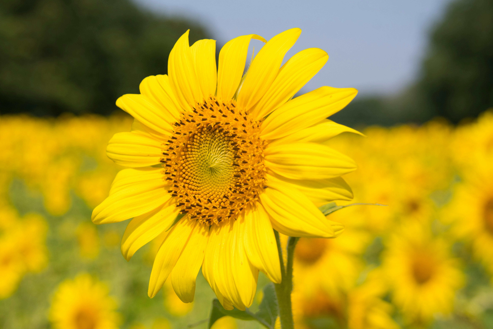

Welcome to Our Blooming World!
Hello, There! We're FARA
We’re Faith and Mera, the duo behind FARA. What started as a shared love for flowers quickly bloomed into a business built on creativity, trust, and a dream to bring beauty into everyday life. With a passion for floral design, personalized service, and community connection, we’ve teamed up to create more than just a flower shop — it’s a space where every bouquet tells a story. We’re so excited to share our journey with you, one bloom at a time. 🌸
Flower of the Week
Sunflower – A symbol of happiness and warmth!
About US
Hello! I'm Faith, a student and web developer passionate about flowers and storytelling. I created this blog to share the colors of my life—from coding to campus adventures, all through a floral lens.
My Interests
- Web Design & Front-End Development
- Gardening and Flower Arrangement
- Writing stories and journaling
- Capturing nature through photography
Why a Flower Blog?
Flowers remind us of growth, hope, and beauty in everyday life. Just like each bloom, we all grow in different seasons. This blog is our bouquet of thoughts, blooming ideas, and stories as a student and dreamer.
Hello! I'm Mera, as a student of web developer with a passion for creating innovative and user-friendly digital experiences. I'm currently pursuing my studies in Information Technology and actively seeking opportunities to apply my skills in real-world projects. I'm excited to showcase my work and collaborate with like-minded individuals in the field of web development.
My Interests
- Web Design & Front-End Development
- Gardening and Flower Arrangement
- Writing stories and journaling
- Capturing nature through photography
Why a Flower Blog?
Flowers remind us of growth, hope, and beauty in everyday life. Just like each bloom, we all grow in different seasons. This blog is our bouquet of thoughts, blooming ideas, and stories as a student and dreamer.